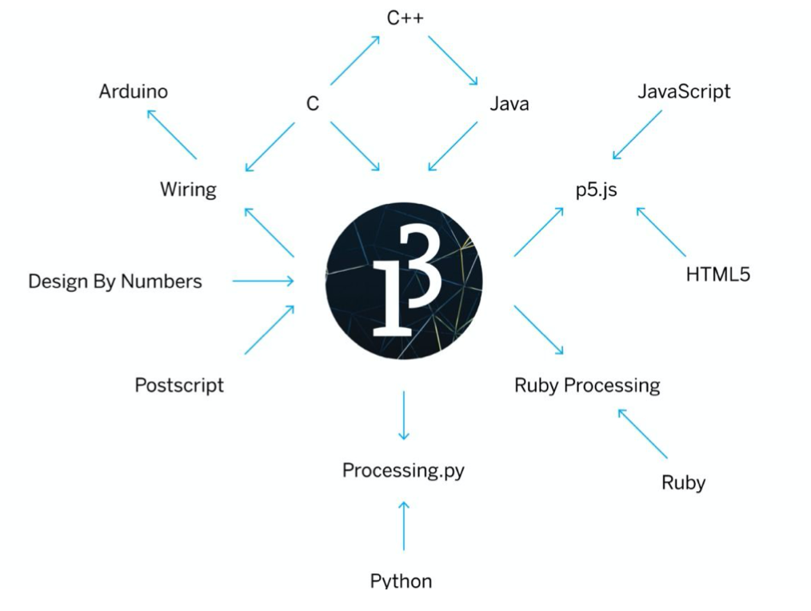

Creative Coding | Processing Bootcamp
OVERVIEW
The drawing above represents the final assignment of an intensive 5-day bootcamp on creative coding with Processing. Processing is a popular software within the visual arts and it uses the Java language. To better understand where it is situated, please have a look at the family tree of coding languages presented in the image below.
THE PROCESS
For the first assignment of the Programming Bootcamp, I created a drawing of a concept which, every time you run the sketch, is different but still the same. My drawing represents an abstract face - two eyes, one mouth and a nose, all changing their place and colour every time you run the code. Click on the Restart icon in the middle of the menu below to see the result.
For the second project, I created an interactive image that had to incorporate several dynamic patterns. Inspired by one of the exercises I did in class, I started by creating a set of rectangles that move on a vertical line and whenever you move the mouse over the canvas, that line follows the mouse. I thought it would be interesting to add a horizontal line as well.
I added to that set of lines another one, but this time, I wanted them to go to the opposite corner of the canvas when I go to the mouse in the upper-right corner. Last, to increase the interactivity, I added the word "Hello!", which can be seen when pressing the Space bar. The colors I chose are black and phosphorescent green, which might make you think of Matrix.
The third project is a version of Pacman called Pink Pacperson. If you want to try playing it, I would recommend opening it in OpenProcessing. The rules are simple: you need to help Pink Pacperson get to Momma Pacperson without touching any pacperson you meet on the way.
For the last day of the programming bootcamp, we had a free assignment. That motivated me to use Processing to sketch something, since it seemed useful for future assignments and projects.
I started from an image with a slice of orange and I tried to recreate that with Processing. I drew the background and multiple ellipses at the bottom of the screen. Over the ellipses, I added a rectangle as a frame, I made it transparent and I added a white stroke, so that is covers the part of the ellipses that gets over the background. Over the ellipses, I drew lines at different parameters, so that it would give the ellipses the image of a slice of orange.
At the end, I used the drawing as the background for a presentation. I added a font to my code and wrote 4 lines of text that show up on the screen when you press "b/B", "q/Q", "n/N" and "y/Y"